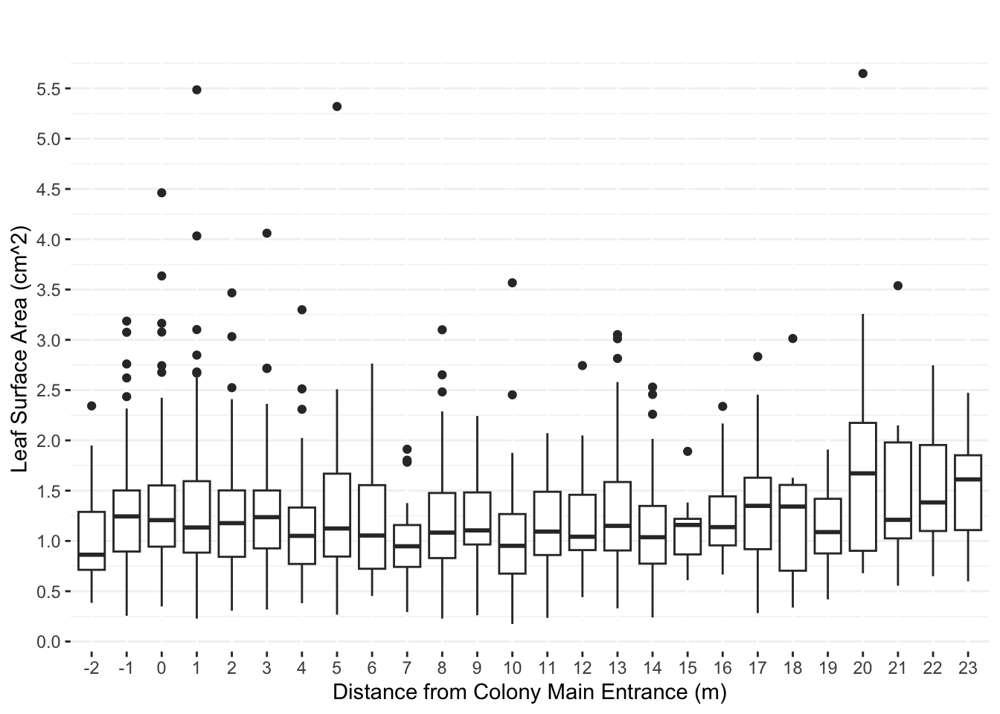
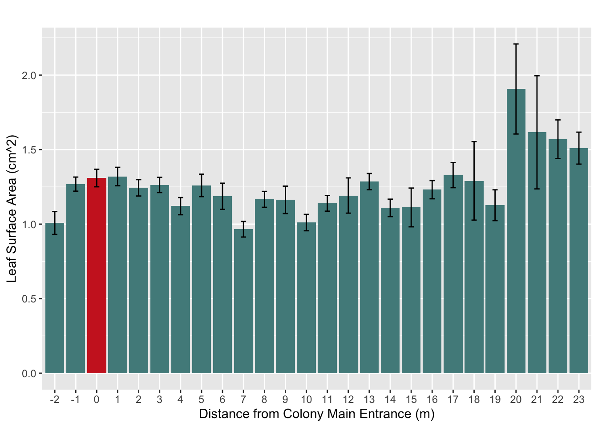
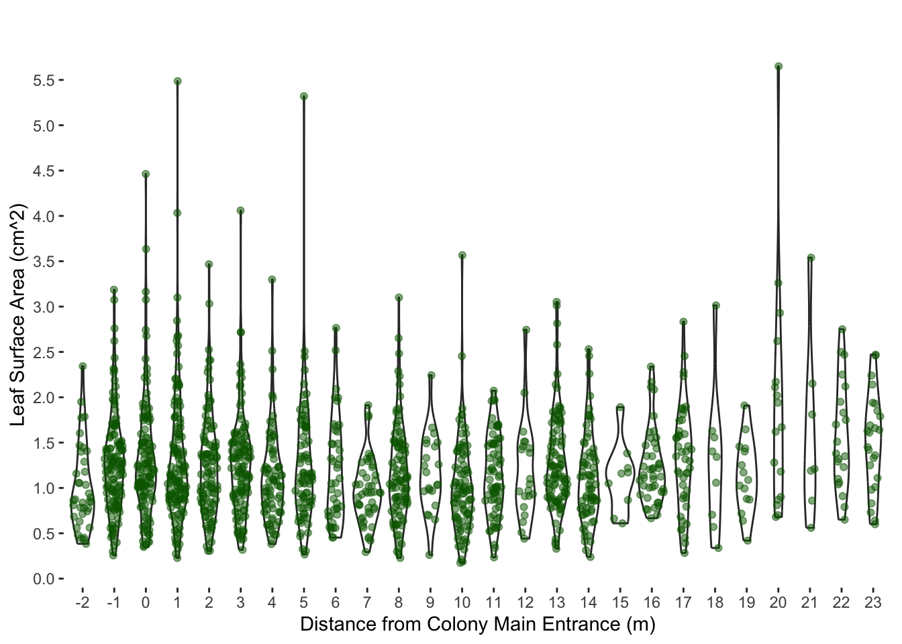
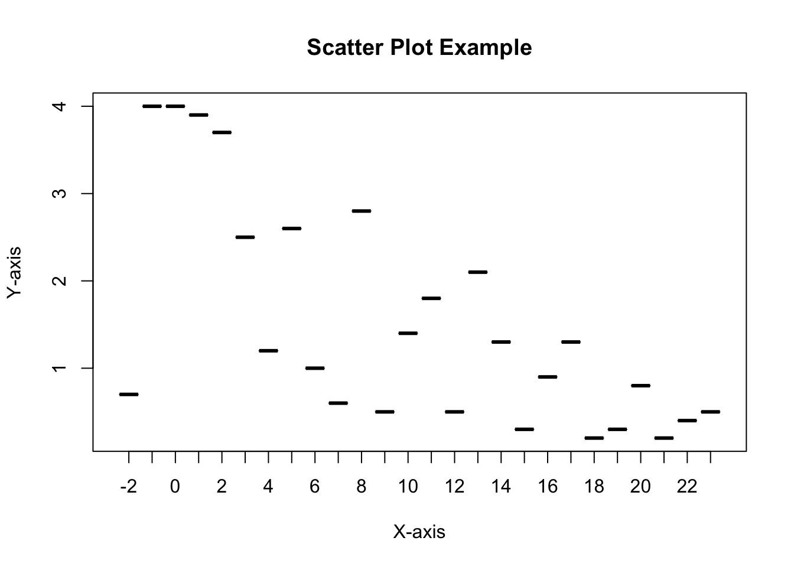
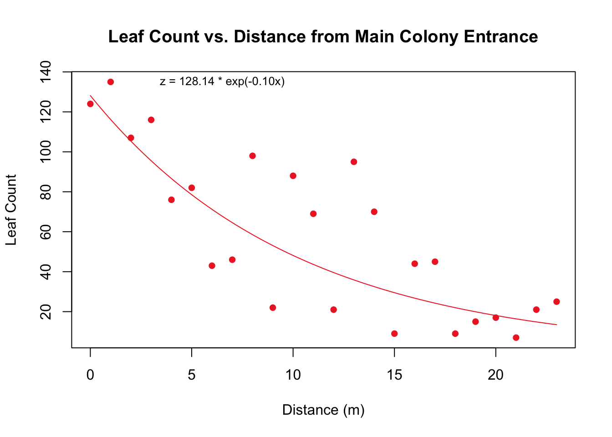
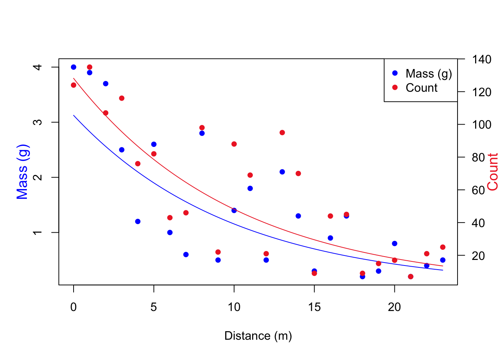
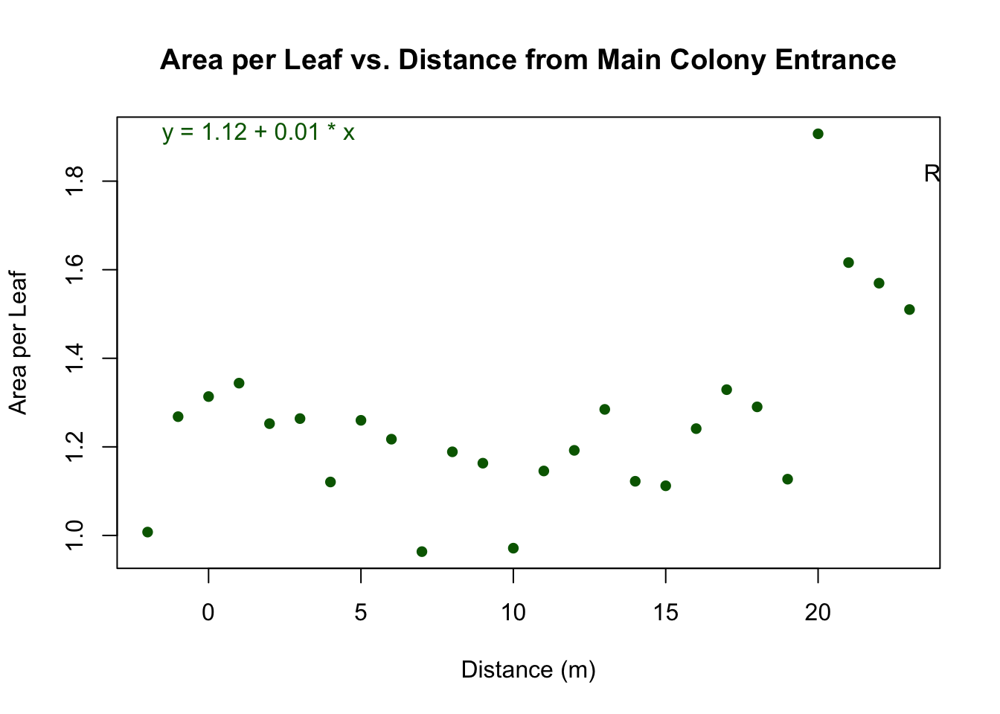
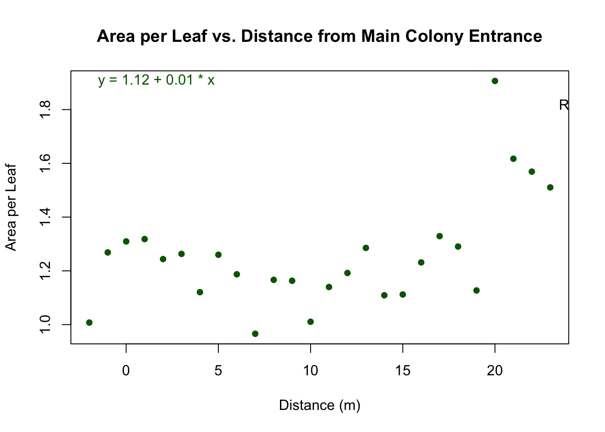
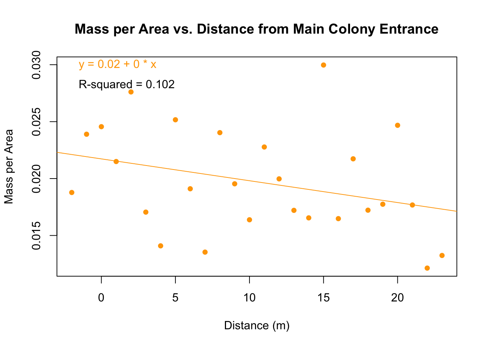
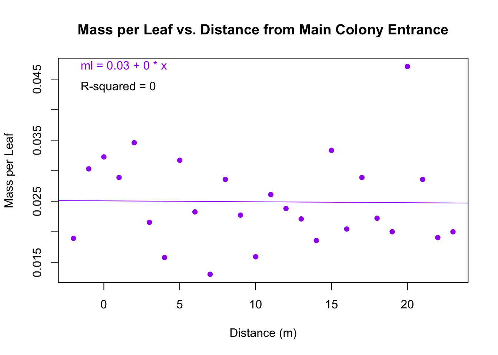

df <- read_xlsx("~/Desktop/Spring 2024/Field Ecology Lab/Leafcutters Jan 2024/Excel Sheets/No statistics.xlsx")Leaf_Analysis
Context
From January 1-15, 2024, I visited Costa Rica as a class trip. I conducted an observational study on foraging behavior of leafcutter ants. My goal is to assess qualities of leaves that are rejected far from the colony, vs. leaves that are carried all the way to the colony entrance and rejected at the doorstep.
Packages
- tidyverse
- readxl
- ggplot2
- ggforce
- dplyr
- agricolae
- purrr
- readxl
- openxlsx
Leaf Area vs. Distance Analysis
Make dataframe from excel
Tidy, remove NA, and order
df_long <- tidyr::gather(df, key = "Distance", value = "Area")
df_long$Distance <- as.character(df_long$Distance)
df_long_nona <- df_long[complete.cases(df_long$Area), ]
df_long_nona$Distance <- as.character(df_long_nona$Distance)
df_long_nona$Distance <- factor(df_long_nona$Distance, levels = unique(df_long_nona$Distance))Make a box-and-whisker plot
ggplot(df_long_nona, aes(x = Distance, y = Area)) +
geom_boxplot() +
labs(title = "",
x = "Distance from Colony Main Entrance (m)",
y = "Leaf Surface Area (cm^2)") +
theme(panel.background = element_rect(fill = "white"),
panel.grid = element_line(color = "white"),
panel.grid.major.x = element_line(color = "white"))+
scale_y_continuous(breaks = seq(0, max(df_long_nona$Area), by = 0.5))
Make a scatter plot with jitter
ggplot(df_long_nona, aes(x = Distance, y = Area)) +
geom_point(position = position_jitter(width = 0.1, height = 0.1), color = "darkgreen", alpha = 0.1) +
labs(title = "",
x = "Distance from Colony Main Entrance (m)",
y = "Leaf Surface Area (cm^2)") +
theme(panel.background = element_rect(fill = "white"),
panel.grid = element_line(color = "white"),
panel.grid.major.x = element_line(color = "white")) +
scale_y_continuous(breaks = seq(0, max(df_long_nona$Area), by = 0.5))
Add violin plot
ggplot(df_long_nona, aes(x = Area, y = Distance)) +
geom_violin() +
geom_sina(color = "darkgreen", alpha = 0.5) + # Use geom_sina for adjusted jitter
labs(title = "",
x = "Leaf Surface Area (cm^2)",
y = "Distance from Colony Main Entrance (m)") +
theme(panel.background = element_rect(fill = "white"),
panel.grid = element_line(color = "white"),
panel.grid.major.y = element_line(color = "white")) +
scale_x_continuous(breaks = seq(0, max(df_long_nona$Area), by = 0.5)) +
coord_flip()
Make a bar chart
# Calculate means and standard errors using dplyr
summary_data <- df_long_nona %>%
group_by(Distance) %>%
summarize(Mean = mean(Area, na.rm = TRUE),
SE = sd(Area, na.rm = TRUE) / sqrt(sum(!is.na(Area))))
ggplot(summary_data, aes(x = Distance, y = Mean, fill = factor(Distance))) +
geom_bar(stat = "identity", position = "dodge", fill = ifelse(summary_data$Distance == "0", "firebrick3", "darkslategray4")) +
geom_errorbar(aes(ymin = Mean - SE, ymax = Mean + SE), position = position_dodge(width = 0.8), width = 0.25) +
labs(title = "",
x = "Distance from Colony Main Entrance (m)",
y = "Leaf Surface Area (cm^2)") +
theme(legend.position = "none",
panel.background = element_rect(fill = "white"),
panel.grid = element_line(color = "white"),
panel.grid.major.x = element_line(color = "white"))
Leaf area statistics
One-way ANOVA
model <- aov(Area ~ Distance, data = df_long_nona)
summary(model) Df Sum Sq Mean Sq F value Pr(>F)
Distance 25 28.9 1.1553 3.496 1.46e-08 ***
Residuals 1528 505.0 0.3305
---
Signif. codes: 0 '***' 0.001 '**' 0.01 '*' 0.05 '.' 0.1 ' ' 1Tukey Test
tukey_results <- HSD.test(model, "Distance")
print(tukey_results)$statistics
MSerror Df Mean CV
0.3304655 1528 1.228566 46.79126
$parameters
test name.t ntr StudentizedRange alpha
Tukey Distance 26 5.21071 0.05
$means
Area std r se Min Max Q25 Q50 Q75
-1 1.2685682 0.5440600 132 0.05003526 0.256 3.186 0.89475 1.2440 1.50225
-2 1.0075946 0.4666685 37 0.09450662 0.384 2.343 0.71300 0.8630 1.28900
0 1.3095806 0.6564874 124 0.05162407 0.349 4.462 0.94325 1.2070 1.55200
1 1.3181765 0.7173651 136 0.04929395 0.228 5.486 0.88450 1.1385 1.59175
10 1.0106136 0.5150416 88 0.06128042 0.174 3.567 0.67525 0.9515 1.26750
11 1.1398406 0.4386382 69 0.06920517 0.235 2.072 0.86000 1.0930 1.48900
12 1.1920952 0.5417438 21 0.12544502 0.441 2.744 0.90900 1.0420 1.45900
13 1.2853053 0.5317337 95 0.05897953 0.329 3.052 0.90550 1.1500 1.58600
14 1.1091429 0.4891396 70 0.06870907 0.239 2.530 0.77425 1.0370 1.34800
15 1.1121111 0.3901543 9 0.19162044 0.610 1.891 0.86600 1.1590 1.22000
16 1.2313409 0.4054133 44 0.08666361 0.666 2.338 0.95600 1.1375 1.44300
17 1.3291778 0.5662934 45 0.08569527 0.283 2.833 0.91800 1.3490 1.62900
18 1.2903333 0.7899096 9 0.19162044 0.338 3.013 0.70400 1.3420 1.55700
19 1.1270667 0.4003059 15 0.14842856 0.419 1.909 0.87600 1.0880 1.41900
2 1.2437477 0.5679338 107 0.05557394 0.306 3.467 0.84200 1.1770 1.50250
20 1.9064706 1.2458729 17 0.13942435 0.680 5.650 0.90000 1.6700 2.17000
21 1.6171429 1.0047838 7 0.21727716 0.560 3.540 1.02500 1.2100 1.98000
22 1.5690476 0.5954150 21 0.12544502 0.650 2.750 1.10000 1.3800 1.95000
23 1.5104000 0.5356575 25 0.11497226 0.600 2.470 1.11000 1.6100 1.85000
3 1.2631379 0.5508285 116 0.05337453 0.318 4.060 0.92625 1.2365 1.50200
4 1.1206974 0.5026705 76 0.06594112 0.381 3.299 0.77125 1.0505 1.33225
5 1.2599390 0.6813044 82 0.06348281 0.267 5.320 0.84500 1.1240 1.66900
6 1.1871860 0.5744438 43 0.08766553 0.453 2.764 0.72350 1.0540 1.55500
7 0.9659348 0.3553319 46 0.08475868 0.293 1.912 0.74200 0.9470 1.15825
8 1.1664694 0.5291474 98 0.05806976 0.228 3.100 0.82975 1.0830 1.47700
9 1.1631364 0.4310594 22 0.12256085 0.261 2.243 0.96475 1.1050 1.48250
$comparison
NULL
$groups
Area groups
20 1.9064706 a
21 1.6171429 ab
22 1.5690476 ab
23 1.5104000 ab
17 1.3291778 ab
1 1.3181765 b
0 1.3095806 b
18 1.2903333 b
13 1.2853053 b
-1 1.2685682 b
3 1.2631379 b
5 1.2599390 b
2 1.2437477 b
16 1.2313409 b
12 1.1920952 b
6 1.1871860 b
8 1.1664694 b
9 1.1631364 b
11 1.1398406 b
19 1.1270667 b
4 1.1206974 b
15 1.1121111 b
14 1.1091429 b
10 1.0106136 b
-2 1.0075946 b
7 0.9659348 b
attr(,"class")
[1] "group"Removal of outliers
# Load necessary libraries
library(dplyr)
# Specify the columns for which you want to check outliers
columns_to_check <- c("Area", "Distance")
# Function to remove outliers based on box-and-whisker plot
remove_outliers <- function(x) {
bp <- boxplot(x, plot = FALSE)
outliers <- bp$out
return(outliers)
}
# Identify and store outliers
outliers_list <- df_long_nona %>%
group_by(Distance) %>%
summarise(across(all_of("Area"), remove_outliers)) %>%
unnest(cols = c(Area))Warning: Returning more (or less) than 1 row per `summarise()` group was deprecated in
dplyr 1.1.0.
ℹ Please use `reframe()` instead.
ℹ When switching from `summarise()` to `reframe()`, remember that `reframe()`
always returns an ungrouped data frame and adjust accordingly.`summarise()` has grouped output by 'Distance'. You can override using the
`.groups` argument.# Create df_no_outliers by removing outliers for each column
df_no_outliers <- df_long_nona %>%
anti_join(outliers_list, by = c("Distance" = "Distance", "Area" = "Area"))Leaf Mass and Count Analysis
Create a Dataframe
# Extract the means from the summary_data dataframe
area_vector <- summary_data$Mean
distance_vector <- summary_data$Distance
#Extract mass and count from excel
mass_count_excel_file_path <- "~/Desktop/Spring 2024/Field Ecology Lab/Leafcutters Jan 2024/Excel Sheets/Area Data.xlsx"leaf_count_row <- df_2[2, ]
count_vector <- as.vector(unlist(leaf_count_row))
count_vector <- count_vector[count_vector != "count"]
count_vector <- count_vector[count_vector != "1554"]
count_vector <- as.numeric(count_vector)
leaf_mass_row <- df_2[1, ]
mass_vector <- as.vector(unlist(leaf_mass_row))
mass_vector <- mass_vector[mass_vector != "mass"]
mass_vector <- mass_vector[mass_vector != "39.5"]
mass_vector <- as.numeric(mass_vector)
mass_per_leaf <- mass_vector / count_vector
mass_per_area <- mass_vector / area_vector / count_vector
quadrat_data <- data.frame(
Distance = distance_vector,
Area = area_vector,
Mass = mass_vector,
Count = count_vector,
MperL = mass_per_leaf,
MperA = mass_per_area
)
#change row headers
colnames(quadrat_data) <-
c("Distance (m)", "Avg Area (cm²)", "Mass (g)", "Count","g/leaf", "g/cm²")
print(quadrat_data, row.names = FALSE) Distance (m) Avg Area (cm²) Mass (g) Count g/leaf g/cm²
-2 1.0075946 0.7 37 0.01891892 0.01877632
-1 1.2685682 4.0 132 0.03030303 0.02388759
0 1.3095806 4.0 124 0.03225806 0.02463236
1 1.3181765 3.9 136 0.02867647 0.02175465
2 1.2437477 3.7 107 0.03457944 0.02780262
3 1.2631379 2.5 116 0.02155172 0.01706205
4 1.1206974 1.2 76 0.01578947 0.01408897
5 1.2599390 2.6 82 0.03170732 0.02516576
6 1.1871860 1.0 43 0.02325581 0.01958902
7 0.9659348 0.6 46 0.01304348 0.01350348
8 1.1664694 2.8 98 0.02857143 0.02449394
9 1.1631364 0.5 22 0.02272727 0.01953965
10 1.0106136 1.4 88 0.01590909 0.01574201
11 1.1398406 1.8 69 0.02608696 0.02288650
12 1.1920952 0.5 21 0.02380952 0.01997284
13 1.2853053 2.1 95 0.02210526 0.01719845
14 1.1091429 1.3 70 0.01857143 0.01674395
15 1.1121111 0.3 9 0.03333333 0.02997302
16 1.2313409 0.9 44 0.02045455 0.01661160
17 1.3291778 1.3 45 0.02888889 0.02173441
18 1.2903333 0.2 9 0.02222222 0.01722208
19 1.1270667 0.3 15 0.02000000 0.01774518
20 1.9064706 0.8 17 0.04705882 0.02468374
21 1.6171429 0.2 7 0.02857143 0.01766784
22 1.5690476 0.4 21 0.01904762 0.01213961
23 1.5104000 0.5 25 0.02000000 0.01324153Plot Leaf Mass vs. Distance
#establish data
x <- 0:23
y <- mass_vector[-(1:2)]
z <- count_vector[-(1:2)]
ar <- area_vector[-(1:2)]
ml <- mass_per_leaf[-(1:2)]
ma <- mass_per_area[-(1:2)]
# Create the data frame
df_3 <- data.frame(
x = x,
y = y,
z = z,
ar = ar,
ml = ml,
ma = ma
)
plot(x, y, main = "Leaf Mass vs. Distance from Main Colony Entrance", xlab = "Distance (m)", ylab = "Leaf Mass (g)", col = "blue", pch = 16)
#Add an exponential line of best fit
fit <- lm(log(y) ~ x)
# Generate predicted values for the exponential fit
x_pred <- seq(min(x), max(x), length.out = 100)
y_pred <- exp(predict(fit, newdata = data.frame(x = x_pred)))
# Add the exponential line to the plot
lines(x_pred, y_pred, col = "blue", type = "l")
#add the equation of best fit
# Extract coefficients and transform back from log scale
a <- exp(coef(fit)[1])
b <- coef(fit)[2]
# Print the equation on the plot
eq <- sprintf("y = %.2f * exp(%.2fx)", a, b)
text(3, max(y), eq, pos = 4, col = "black", cex = 0.8)Plot Leaf Count vs. Distance
plot(x, z, main = "Leaf Count vs. Distance from Main Colony Entrance", xlab = "Distance (m)", ylab = "Leaf Count", col = "firebrick2", pch = 16)
fit <- lm(log(z) ~ x)
x_pred <- seq(min(x), max(x), length.out = 100)
z_pred <- exp(predict(fit, newdata = data.frame(x = x_pred)))
lines(x_pred, z_pred, col = "firebrick2", type = "l")
a <- exp(coef(fit)[1])
b <- coef(fit)[2]
eq <- sprintf("z = %.2f * exp(%.2fx)", a, b)
text(3, max(z), eq, pos = 4, col = "black", cex = 0.8)
Plot Leaf Count vs. Mass
plot(z, y, main = "", xlab = "", ylab = "", col = "maroon", pch = 16)
# Add an exponential line of best fit
fit <- lm(log(y) ~ z)
# Generate predicted values for the exponential fit
z_pred <- seq(min(z), max(z), length.out = 100)
y_pred <- exp(predict(fit, newdata = data.frame(z = z_pred)))
# Add the exponential line to the plot
lines(z_pred, y_pred, col = "maroon", type = "l")
a <- exp(coef(fit)[1])
b <- coef(fit)[2]
eq <- sprintf("z = %.2f * exp(%.2fx)", a, b)
text(3, max(y), eq, pos = 4, col = "black", cex = 0.8)
Plot both Leaf Count and Mass vs. Distance on the same graph
# Set up the first plotting region
# Set up the plotting region
par(mar = c(5, 4, 4, 2) + 0.1, oma = c(0, 0, 0, 1))
plot(x, y, type = "p", col = "blue", pch = 16, ylab = "", xlab = "Distance (m)", axes = TRUE)
# Add a label on the left side for Y
mtext("Mass (g)", side = 2, line = 2, col = "blue", cex = 1.2) # Adjust line and cex as needed
#Add an exponential line of best fit
fit <- lm(log(y) ~ x)
# Generate predicted values for the exponential fit
x_pred <- seq(min(x), max(x), length.out = 100)
y_pred <- exp(predict(fit, newdata = data.frame(x = x_pred)))
# Add the exponential line to the plot
lines(x_pred, y_pred, col = "blue", type = "l")
# Overlay the second set of points
par(new = TRUE)
plot(x, z, type = "p", col = "firebrick2", pch = 16, ylab = "", xlab = "", axes = FALSE)
#Add line of best fit
fit <- lm(log(z) ~ x)
x_pred <- seq(min(x), max(x), length.out = 100)
z_pred <- exp(predict(fit, newdata = data.frame(x = x_pred)))
lines(x_pred, z_pred, col = "firebrick2", type = "l")
# Add a label on the right side for Z
mtext("Count", side = 4, line = 2, col = "firebrick2", cex = 1.2) # Adjust line and cex as needed
# Add a y-axis on the right side for Z
axis(4, col = "black", col.axis = "black", las = 1) # Set color for Z axis
# Add a legend
legend("topright", legend = c("Mass (g)", "Count"), col = c("blue", "firebrick2"), pch = 16)
Plot Area per Leaf vs. Distance
df_4 <- data.frame(
x = distance_vector,
ar = area_vector,
ml = mass_per_leaf,
ma = mass_per_area
)
df_4$x <- as.numeric(as.character(df_4$x))
# Fit a linear regression model
model <- lm(ar ~ x, data = df_4)
# Create a scatter plot
plot(df_4$x, df_4$ar, main = "Area per Leaf vs. Distance from Main Colony Entrance", xlab = "Distance (m)", ylab = "Area per Leaf", col = "darkgreen", pch = 16)
# Extract coefficients
coefficients <- coef(model)
# Add the equation of the line
equation <- paste("y =", round(coefficients[1], 2), "+", round(coefficients[2], 2), "* x")
text(min(df_4$x), max(df_4$ar), equation, pos = 4, col = "darkgreen")
# Calculate R-squared
r_squared <- summary(model)$r.squared
# Add R-squared value to the plot
r_squared_text <- paste("R-squared =", round(r_squared, 3))
text(max(df_4$x), max(df_4$ar) - 0.1 * diff(range(df_4$ar)), r_squared_text, pos = 4, col = "black")
Plot Mass per Leaf vs. Distance
# Fit a linear regression model
model <- lm(ml ~ x, data = df_4)
# Create a scatter plot
plot(df_4$x, df_4$ml, main = "Mass per Leaf vs. Distance from Main Colony Entrance", xlab = "Distance (m)", ylab = "Mass per Leaf", col = "purple", pch = 16)
# Add the line of best fit to the plot
abline(model, col = "purple")
# Extract coefficients
coefficients <- coef(model)
# Add the equation of the line
equation <- paste("ml =", round(coefficients[1], 2), "+", round(coefficients[2], 2), "* x")
text(min(df_4$x), max(df_4$ml), equation, pos = 4, col = "purple")
# Calculate R-squared
r_squared <- summary(model)$r.squared
# Add R-squared value to the plot
r_squared_text <- paste("R-squared =", round(r_squared, 3))
text(min(df_4$x), max(df_4$ml) - 0.1 * diff(range(df_4$ml)), r_squared_text, pos = 4, col = "black")
Plot Mass per Area vs. Distance
model <- lm(ma ~ x, data = df_4)
plot(df_4$x, df_4$ma, main = "Mass per Area vs. Distance from Main Colony Entrance", xlab = "Distance (m)", ylab = "Mass per Area", col = "orange", pch = 16)
abline(model, col = "orange")
coefficients <- coef(model)
equation <- paste("y =", round(coefficients[1], 2), "+", round(coefficients[2], 2), "* x")
text(min(df_4$x), max(df_4$ma), equation, pos = 4, col = "orange")
r_squared <- summary(model)$r.squared
r_squared_text <- paste("R-squared =", round(r_squared, 3))
text(min(df_4$x), max(df_4$ma) - 0.1 * diff(range(df_4$ma)), r_squared_text, pos = 4, col = "black")